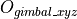
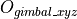

RMUC2022弹道补偿
- Authors
HarryWen
- Contact
- Date
2022/09/8
- Copyright
This document has been placed in the public domain.
概述
在RMU竞赛中，由于弹丸受重力影响，对于远距离打击如果不进行弹道补偿，弹丸会打到目标偏下的位置，而影响自瞄系统击打的准确率。
为消除弹丸下坠的影响，引入了弹道补偿模块。该文档将阐述弹道补偿模块中的理想抛物线模型。
1. 模型定义与假设
1.1 坐标系定义
云台坐标系通过 轴与
轴与 轴连接在底盘上，初始坐标系。
其中前方为
轴连接在底盘上，初始坐标系。
其中前方为 正方向，左方为
正方向，左方为 正方向，上侧为
正方向，上侧为 正方向。重力加速度
正方向。重力加速度  方向为
方向为  轴负方向。
轴负方向。
相机坐标系通过轴与轴连接在于云台上，初始坐标系。
1.2 模型符号定义
符号 |
符号说明 |
备注 |
|---|---|---|
|
弹丸从枪管飞出到击打到装甲板的飞行时间 |
即下坠时间 |
|
弹丸从枪管飞出到击打到装甲板的飞行距离 |
/ |
弹丸沿枪管朝向射出的目标点位置和实际
命中点的高度差，即下落高度
|
/ |
|
|
弹丸初速度 |
通过裁判系统获得 |
在底盘坐标系下云台相对底盘中心偏转角度 |
/ |
|
在相机坐标系下目标相对相机光心的偏转角度 |
/ |
|
在底盘坐标系下云台用于补偿弹丸下落的偏转角度 |
默认为零 |


1.3 模型假设
弹丸不受空气阻力影响
弹丸从枪管飞出的速度为裁判系统获取到的速度
2. 模型数学推导

1. 功能实现
采用反推模型的方法
运动补偿的相关代码位于 bubble_contrib/bubble_aming 模块下
目标点  信息通过识别器经由 PnP解算 获得。
PnP解算将世界坐标系下目标的位姿信息转换为相机坐标系下：
信息通过识别器经由 PnP解算 获得。
PnP解算将世界坐标系下目标的位姿信息转换为相机坐标系下：
设置最终目标点targetPoint 设临时目标点tempPoint=targetPoint 循环迭代10次:
计算仰角angle=枪管指向tempPoint的角度
利用抛物线模型，计算实际命中点realPoint.
得到误差，即下落高度deltaH=targetPoint-realPoint
更新tempPoint=tempPoint+deltaH
输出仰角angle，与误差deltaH